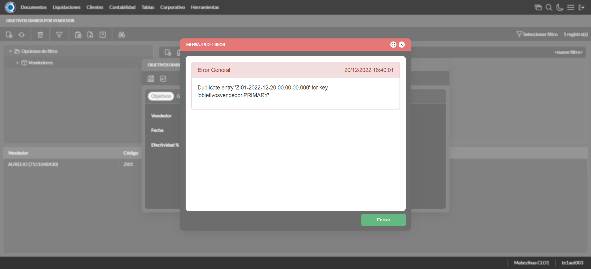
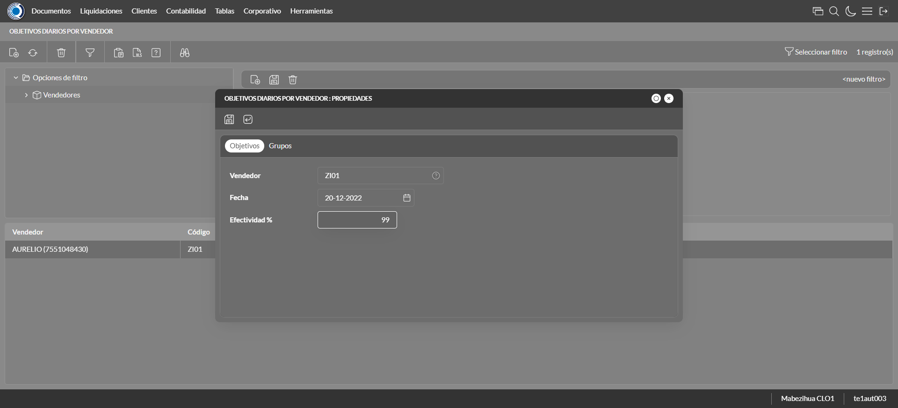
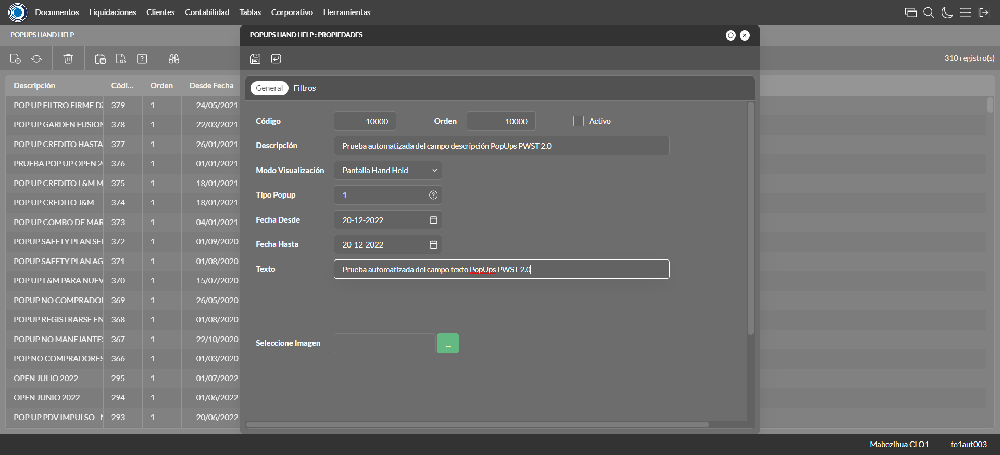
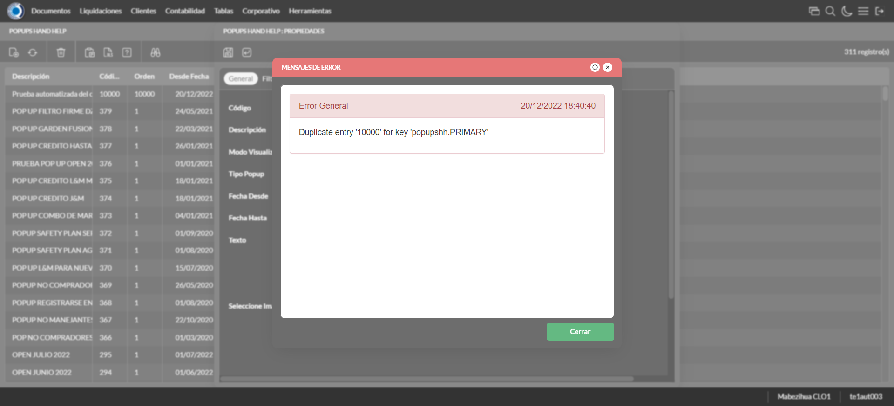
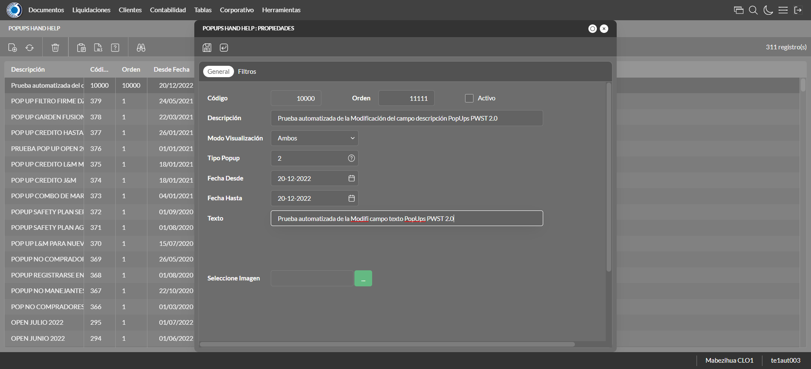

Desarrollado por : Area de Testing PWST
Fecha y hora de inicio : 2022-12-20 12:39:12
Duracion : 0:01:46.613689
Resultado : Total 13，Correctos 12 ，Errores 1 ，Taza de resultado 92.31%
Resumen 92.31% Errores 1 Fallidos 0 Correctos 12 Test realizados 13
| Caso de Prueba | Total | Correctos | Fallido | Error | Detalles | Captura del error |
| ScriptAmarillo.Test: Script Amarillo | 13 | 12 | 0 | 1 | Detalles | |
test |
ft1_1: 2022-12-20 12:39:13,873 - root - INFO - Se abre el chrome
2022-12-20 12:39:15,185 - root - INFO - Entra a la URL
2022-12-20 12:39:15,301 - root - INFO - Maximiza la pantalla
Traceback (most recent call last):
File "C:\Users\jsand\AppData\Local\Programs\Python\Python310\lib\site-packages\selenium-4.4.0-py3.10.egg\selenium\webdriver\remote\switch_to.py", line 87, in frame
frame_reference = self._driver.find_element(By.ID, frame_reference)
File "C:\Users\jsand\AppData\Local\Programs\Python\Python310\lib\site-packages\selenium-4.4.0-py3.10.egg\selenium\webdriver\remote\webdriver.py", line 856, in find_element
return self.execute(Command.FIND_ELEMENT, {
File "C:\Users\jsand\AppData\Local\Programs\Python\Python310\lib\site-packages\selenium-4.4.0-py3.10.egg\selenium\webdriver\remote\webdriver.py", line 434, in execute
self.error_handler.check_response(response)
File "C:\Users\jsand\AppData\Local\Programs\Python\Python310\lib\site-packages\selenium-4.4.0-py3.10.egg\selenium\webdriver\remote\errorhandler.py", line 243, in check_response
raise exception_class(message, screen, stacktrace)
selenium.common.exceptions.NoSuchElementException: Message: no such element: Unable to locate element: {"method":"css selector","selector":"[id="mainFrame"]"}
(Session info: chrome=108.0.5359.125)
Stacktrace:
Backtrace:
(No symbol) [0x008CF243]
(No symbol) [0x00857FD1]
(No symbol) [0x0074D04D]
(No symbol) [0x0077C0B0]
(No symbol) [0x0077C22B]
(No symbol) [0x007AE612]
(No symbol) [0x007985D4]
(No symbol) [0x007AC9EB]
(No symbol) [0x00798386]
(No symbol) [0x0077163C]
(No symbol) [0x0077269D]
GetHandleVerifier [0x00B69A22+2655074]
GetHandleVerifier [0x00B5CA24+2601828]
GetHandleVerifier [0x00978C0A+619850]
GetHandleVerifier [0x00977830+614768]
(No symbol) [0x008605FC]
(No symbol) [0x00865968]
(No symbol) [0x00865A55]
(No symbol) [0x0087051B]
BaseThreadInitThunk [0x76796BD9+25]
RtlGetFullPathName_UEx [0x77B58FD2+1218]
RtlGetFullPathName_UEx [0x77B58F9D+1165]
During handling of the above exception, another exception occurred:
Traceback (most recent call last):
File "C:\Users\jsand\AppData\Local\Programs\Python\Python310\lib\site-packages\selenium-4.4.0-py3.10.egg\selenium\webdriver\remote\switch_to.py", line 90, in frame
frame_reference = self._driver.find_element(By.NAME, frame_reference)
File "C:\Users\jsand\AppData\Local\Programs\Python\Python310\lib\site-packages\selenium-4.4.0-py3.10.egg\selenium\webdriver\remote\webdriver.py", line 856, in find_element
return self.execute(Command.FIND_ELEMENT, {
File "C:\Users\jsand\AppData\Local\Programs\Python\Python310\lib\site-packages\selenium-4.4.0-py3.10.egg\selenium\webdriver\remote\webdriver.py", line 434, in execute
self.error_handler.check_response(response)
File "C:\Users\jsand\AppData\Local\Programs\Python\Python310\lib\site-packages\selenium-4.4.0-py3.10.egg\selenium\webdriver\remote\errorhandler.py", line 243, in check_response
raise exception_class(message, screen, stacktrace)
selenium.common.exceptions.NoSuchElementException: Message: no such element: Unable to locate element: {"method":"css selector","selector":"[name="mainFrame"]"}
(Session info: chrome=108.0.5359.125)
Stacktrace:
Backtrace:
(No symbol) [0x008CF243]
(No symbol) [0x00857FD1]
(No symbol) [0x0074D04D]
(No symbol) [0x0077C0B0]
(No symbol) [0x0077C22B]
(No symbol) [0x007AE612]
(No symbol) [0x007985D4]
(No symbol) [0x007AC9EB]
(No symbol) [0x00798386]
(No symbol) [0x0077163C]
(No symbol) [0x0077269D]
GetHandleVerifier [0x00B69A22+2655074]
GetHandleVerifier [0x00B5CA24+2601828]
GetHandleVerifier [0x00978C0A+619850]
GetHandleVerifier [0x00977830+614768]
(No symbol) [0x008605FC]
(No symbol) [0x00865968]
(No symbol) [0x00865A55]
(No symbol) [0x0087051B]
BaseThreadInitThunk [0x76796BD9+25]
RtlGetFullPathName_UEx [0x77B58FD2+1218]
RtlGetFullPathName_UEx [0x77B58F9D+1165]
During handling of the above exception, another exception occurred:
Traceback (most recent call last):
File "C:\xampp\htdocs\versiones\automatizaciones\AutoPWST\ScriptAmarillo\testCase\ScriptAmarillo.py", line 46, in test
self.driver.switch_to.frame("mainFrame")
File "C:\Users\jsand\AppData\Local\Programs\Python\Python310\lib\site-packages\selenium-4.4.0-py3.10.egg\selenium\webdriver\remote\switch_to.py", line 92, in frame
raise NoSuchFrameException(frame_reference)
selenium.common.exceptions.NoSuchFrameException: Message: mainFrame
|
|
||||
test_000: Ingresa a la base de datos |
pt1_2: 2022-12-20 12:39:18,471 - root - INFO - Escribe el usuario
2022-12-20 12:39:18,597 - root - INFO - Escribe la contraseña
2022-12-20 12:39:18,710 - root - INFO - Se dio clic en el boton ingresar
2022-12-20 12:39:19,420 - root - INFO - Ejecutar Enterprise
2022-12-20 12:39:23,480 - root - INFO - Cambia entre pestañas
|
|
||||
test_001: Ingresa a pantalla Objetivos Diarios |
pt1_3: 2022-12-20 12:39:34,233 - root - INFO - Abre la pantalla de Objetivos Diarios
2022-12-20 12:39:34,795 - root - INFO - La pantalla ejecutada es Lista de precios.
2022-12-20 12:39:34,796 - root - INFO - Captura: C:\xampp\htdocs\versiones\automatizaciones\AutoPWST\ScriptAmarillo\report\img screen：20221220_12_39_34.png
2022-12-20 12:39:34,960 - root - INFO - Se presiona el boton 'Refrescar', para crear un nuevo registro igual al anterior.
2022-12-20 12:39:45,543 - root - INFO - Se presiona el boton 'Nuevo', para crear un nuevo registro.
|

|
||||
test_002: Agregar Objetivos Diarios |
pt1_4: 2022-12-20 12:39:46,097 - root - INFO - Se abrio la pantalla para el ingreso de un registro nuevo.
2022-12-20 12:39:46,126 - root - INFO - El campo 'Vendedor' si se encuentra visible.
2022-12-20 12:39:46,154 - root - INFO - El campo 'Fecha' si se encuentra visible.
2022-12-20 12:39:46,182 - root - INFO - El campo 'Efectividad %' si se encuentra visible.
2022-12-20 12:39:47,698 - root - INFO - Ingresa la efectividad del nuevo registro
2022-12-20 12:39:49,706 - root - INFO - Captura: C:\xampp\htdocs\versiones\automatizaciones\AutoPWST\ScriptAmarillo\report\img screen：20221220_12_39_49.png
2022-12-20 12:39:49,905 - root - INFO - Se hace el cambio de pestaña para continuar con el registro nuevo
2022-12-20 12:39:50,497 - root - INFO - Se presiona el boton 'Nuevo', para crear un nuevo registro.
2022-12-20 12:39:51,047 - root - INFO - El campo 'Grupo Política' si se encuentra visible.
2022-12-20 12:39:51,080 - root - INFO - El campo 'Tipo Objetivo' si se encuentra visible.
2022-12-20 12:39:51,109 - root - INFO - El campo 'Tipo Unidad' si se encuentra visible.
2022-12-20 12:39:51,138 - root - INFO - El campo 'Objetivo Cantidad' si se encuentra visible.
2022-12-20 12:39:51,170 - root - INFO - El campo 'Objetivo Cobertura' si se encuentra visible.
2022-12-20 12:39:53,085 - root - INFO - Ingresa el Objetivo Cantidad del nuevo registro
2022-12-20 12:39:53,152 - root - INFO - Ingresa el Objetivo Cobertura del nuevo registro
2022-12-20 12:39:53,215 - root - INFO - Se da clic en el boton Guardar; se debe crear un nuevo registro.
2022-12-20 12:39:53,414 - root - INFO - Se da clic en el boton Guardar; se debe crear un nuevo registro.
|

|
||||
test_003: Modifica Modelos de liquidación |
pt1_5: 2022-12-20 12:39:53,603 - root - INFO - Se presiona el boton 'Refrescar', para crear un nuevo registro igual al anterior.
2022-12-20 12:39:58,680 - root - INFO - Se presiona el boton 'Nuevo', para crear un nuevo registro igual al anterior.
2022-12-20 12:39:59,258 - root - INFO - Se abrio la pantalla para el ingreso de un registro nuevo.
2022-12-20 12:39:59,284 - root - INFO - El campo 'Vendedor' si se encuentra visible.
2022-12-20 12:39:59,311 - root - INFO - El campo 'Fecha' si se encuentra visible.
2022-12-20 12:39:59,338 - root - INFO - El campo 'Efectividad %' si se encuentra visible.
2022-12-20 12:40:00,800 - root - INFO - Ingresa la efectividad del nuevo registro
2022-12-20 12:40:00,855 - root - INFO - Se da clic en el boton Guardar; se debe crear un nuevo registro.
2022-12-20 12:40:02,860 - root - INFO - Captura: C:\xampp\htdocs\versiones\automatizaciones\AutoPWST\ScriptAmarillo\report\img screen：20221220_12_40_02.png
2022-12-20 12:40:03,097 - root - INFO - Se presiona el boton 'Cerrar', para cerrar el mensaje de duplicidad de llave primaria
2022-12-20 12:40:03,214 - root - INFO - Se presiona el boton 'Cerrar', para cerrar la ventana
|
 | ||||
test_004: Modifica Modelos de liquidación |
pt1_6: 2022-12-20 12:40:03,322 - root - INFO - Se presiona el boton 'Refrescar', para crear un nuevo registro igual al anterior.
2022-12-20 12:40:04,968 - root - INFO - Se da clic en el registro creado, para proceder a modificarlo.
2022-12-20 12:40:05,595 - root - INFO - Ingresa la efectividad del nuevo registro
2022-12-20 12:40:07,602 - root - INFO - Captura: C:\xampp\htdocs\versiones\automatizaciones\AutoPWST\ScriptAmarillo\report\img screen：20221220_12_40_07.png
2022-12-20 12:40:07,785 - root - INFO - Se hace el cambio de pestaña para continuar con el registro nuevo
2022-12-20 12:40:08,883 - root - INFO - Se da clic en el registro creado, para proceder a modificarlo.
2022-12-20 12:40:11,071 - root - INFO - Ingresa el Objetivo Cantidad del nuevo registro
2022-12-20 12:40:11,170 - root - INFO - Ingresa el Objetivo Cobertura del nuevo registro
2022-12-20 12:40:11,239 - root - INFO - Se da clic en el boton Guardar; se debe crear un nuevo registro.
2022-12-20 12:40:11,426 - root - INFO - Se da clic en el boton Guardar; se debe modificar la informacion del registro.
|
 | ||||
test_005: Elimina Modelos de liquidación |
pt1_7: 2022-12-20 12:40:11,674 - root - INFO - Se presiona el boton 'Refrescar', para proceder a eliminar el registro.
2022-12-20 12:40:13,300 - root - INFO - Se da clic en el registro creado, para proceder a eliminarlo.
2022-12-20 12:40:13,363 - root - INFO - Se presiona el boton 'Eliminar', para eliminar el registro.
2022-12-20 12:40:15,370 - root - INFO - Captura: C:\xampp\htdocs\versiones\automatizaciones\AutoPWST\ScriptAmarillo\report\img screen：20221220_12_40_15.png
2022-12-20 12:40:15,564 - root - INFO - Se confirma el eliminado del registro
2022-12-20 12:40:15,707 - root - INFO - Se presiona el boton 'Refrescar', para crear un nuevo registro igual al anterior.
2022-12-20 12:40:15,832 - root - INFO - Se presiona el boton 'Cerrar', para cerrar la pantalla de Categorias Fiscales.
|

|
||||
test_006: Ingresa a pantalla Pop Ups |
pt1_8: 2022-12-20 12:40:16,780 - root - INFO - Abre la pantalla de PopUps
2022-12-20 12:40:17,933 - root - INFO - La pantalla ejecutada es PopUps.
2022-12-20 12:40:18,936 - root - INFO - Captura: C:\xampp\htdocs\versiones\automatizaciones\AutoPWST\ScriptAmarillo\report\img screen：20221220_12_40_18.png
2022-12-20 12:40:20,216 - root - INFO - Se ordenó por codigo.
2022-12-20 12:40:30,783 - root - INFO - Se presiona el boton 'Nuevo', para crear un nuevo registro.
|

|
||||
test_007: Agregar Pop Ups |
pt1_9: 2022-12-20 12:40:31,331 - root - INFO - Se abrio la pantalla para el ingreso de un registro nuevo.
2022-12-20 12:40:31,361 - root - INFO - El campo 'Codigo' si se encuentra visible.
2022-12-20 12:40:31,389 - root - INFO - El campo 'Orden' si se encuentra visible.
2022-12-20 12:40:31,418 - root - INFO - El campo 'Activo' si se encuentra visible.
2022-12-20 12:40:31,447 - root - INFO - El campo 'Descrición' si se encuentra visible.
2022-12-20 12:40:31,475 - root - INFO - El campo 'Modo Visualización' si se encuentra visible.
2022-12-20 12:40:31,503 - root - INFO - El campo 'Tipo Popup' si se encuentra visible.
2022-12-20 12:40:31,531 - root - INFO - El campo 'Fecha Desde' si se encuentra visible.
2022-12-20 12:40:31,565 - root - INFO - El campo 'Fecha Hasta' si se encuentra visible.
2022-12-20 12:40:31,593 - root - INFO - El campo 'Texto' si se encuentra visible.
2022-12-20 12:40:31,621 - root - INFO - El campo 'Seleccione Imagen' si se encuentra visible.
2022-12-20 12:40:31,665 - root - INFO - Ingresa el codigo del nuevo registro
2022-12-20 12:40:31,756 - root - INFO - Ingresa la orden del nuevo registro
2022-12-20 12:40:32,882 - root - INFO - Hizo click en el checkbox Activo
2022-12-20 12:40:33,051 - root - INFO - Ingresa la descripción del nuevo registro
2022-12-20 12:40:33,407 - root - INFO - Se dió click en la opción Pantalla Held.
2022-12-20 12:40:34,351 - root - INFO - Se dió doble click en el registro de Tipo Pop Up.
2022-12-20 12:40:34,573 - root - INFO - Ingresa el texto del nuevo registro
2022-12-20 12:40:35,574 - root - INFO - Captura: C:\xampp\htdocs\versiones\automatizaciones\AutoPWST\ScriptAmarillo\report\img screen：20221220_12_40_35.png
2022-12-20 12:40:35,807 - root - INFO - Se da clic en el boton Guardar; se debe crear un nuevo registro.
|
 | ||||
test_009: Modifica Pop Ups |
pt1_10: 2022-12-20 12:40:36,053 - root - INFO - Se presiona el boton 'Refrescar', para crear un nuevo registro igual al anterior.
2022-12-20 12:40:36,641 - root - INFO - Se presiona el boton 'Nuevo', para crear un nuevo registro igual al anterior.
2022-12-20 12:40:37,196 - root - INFO - Se abrio la pantalla para el ingreso de un registro nuevo.
2022-12-20 12:40:37,224 - root - INFO - El campo 'Codigo' si se encuentra visible.
2022-12-20 12:40:37,250 - root - INFO - El campo 'Orden' si se encuentra visible.
2022-12-20 12:40:37,276 - root - INFO - El campo 'Activo' si se encuentra visible.
2022-12-20 12:40:37,303 - root - INFO - El campo 'Descrición' si se encuentra visible.
2022-12-20 12:40:37,332 - root - INFO - El campo 'Modo Visualización' si se encuentra visible.
2022-12-20 12:40:37,359 - root - INFO - El campo 'Tipo Popup' si se encuentra visible.
2022-12-20 12:40:37,386 - root - INFO - El campo 'Fecha Desde' si se encuentra visible.
2022-12-20 12:40:37,412 - root - INFO - El campo 'Fecha Hasta' si se encuentra visible.
2022-12-20 12:40:37,443 - root - INFO - El campo 'Texto' si se encuentra visible.
2022-12-20 12:40:37,468 - root - INFO - El campo 'Seleccione Imagen' si se encuentra visible.
2022-12-20 12:40:37,513 - root - INFO - Ingresa el codigo del nuevo registro
2022-12-20 12:40:37,574 - root - INFO - Ingresa la orden del nuevo registro
2022-12-20 12:40:38,685 - root - INFO - Hizo click en el checkbox Activo
2022-12-20 12:40:38,862 - root - INFO - Ingresa la descripción del nuevo registro
2022-12-20 12:40:39,219 - root - INFO - Se dió click en la opción Pantalla Hand Held.
2022-12-20 12:40:40,149 - root - INFO - Se dió doble click en el registro de Tipo PopUp.
2022-12-20 12:40:40,339 - root - INFO - Ingresa el texto del nuevo registro
2022-12-20 12:40:40,417 - root - INFO - Se da clic en el boton Guardar; NO se debe crear un nuevo registro.
2022-12-20 12:40:41,421 - root - INFO - Captura: C:\xampp\htdocs\versiones\automatizaciones\AutoPWST\ScriptAmarillo\report\img screen：20221220_12_40_41.png
2022-12-20 12:40:41,688 - root - INFO - Se presiona el boton 'Cerrar', para cerrar el mensaje de duplicidad de llave primaria
2022-12-20 12:40:41,803 - root - INFO - Se presiona el boton 'Cerrar', para cerrar la ventana
|
 | ||||
test_010: Modifica Modelos de liquidación |
pt1_11: 2022-12-20 12:40:41,922 - root - INFO - Se presiona el boton 'Refrescar', para proceder a modificar el registro.
2022-12-20 12:40:43,620 - root - INFO - Se dió dos veces click en el encabezado para modificar el orden de los registros.
2022-12-20 12:40:45,792 - root - INFO - Se da clic en el registro creado, para proceder a modificarlo.
2022-12-20 12:40:46,439 - root - INFO - Se modifica el contenido del campo Orden
2022-12-20 12:40:47,560 - root - INFO - Hizo click en el checkbox activo
2022-12-20 12:40:47,795 - root - INFO - Se modifica el contenido del campo Descripción
2022-12-20 12:40:48,151 - root - INFO - Se dió click en la opción Ambos.
2022-12-20 12:40:49,099 - root - INFO - Se dió doble click en el registro de Tipo PopUp.
2022-12-20 12:40:49,357 - root - INFO - Se modifica el contenido del campo Texto
2022-12-20 12:40:50,368 - root - INFO - Captura: C:\xampp\htdocs\versiones\automatizaciones\AutoPWST\ScriptAmarillo\report\img screen：20221220_12_40_50.png
2022-12-20 12:40:50,586 - root - INFO - Se da clic en el boton Guardar; se debe modificar la informacion del registro.
|
 | ||||
test_011: Elimina Modelos de liquidación |
pt1_12: 2022-12-20 12:40:50,842 - root - INFO - Se presiona el boton 'Refrescar', para proceder a eliminar el registro.
2022-12-20 12:40:52,499 - root - INFO - Se da clic en el registro creado, para proceder a eliminarlo.
2022-12-20 12:40:53,582 - root - INFO - Se presiona el boton 'Eliminar', para eliminar el registro.
2022-12-20 12:40:53,583 - root - INFO - Captura: C:\xampp\htdocs\versiones\automatizaciones\AutoPWST\ScriptAmarillo\report\img screen：20221220_12_40_53.png
2022-12-20 12:40:53,772 - root - INFO - Se confirma el eliminado del registro
2022-12-20 12:40:54,357 - root - INFO - Se presiona el boton 'Refrescar', para veriicar si el registro ha sido eliminado.
2022-12-20 12:40:54,985 - root - INFO - Se presiona el boton 'Cerrar', para cerrar la pantalla de Pop Ups.
|

|
||||
test_012: Cerrar_Navegador |
pt1_13: 2022-12-20 12:40:59,417 - root - INFO - Se cierra chrome
|
|
||||
| Caso de prueba | 13 | 12 | 0 | 1 | Taza de resultado：92.31% | |